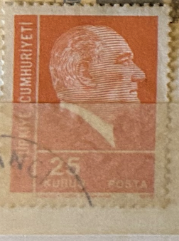
| SOURCE | TITLE| IMAGE MATCH | click to source page |
| kitantik | Mektup Zarfından Kesilmiş / Postadan Geçmiş Pul Filateli - ATATÜRK, 25 KURUŞ - Türkiye Cumhuriyeti - Efemera - kitantik | #16802407000211 | 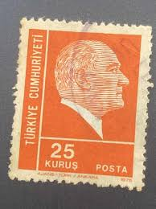 |
| eBay | Turkey - 1972 Ataturk | eBay | 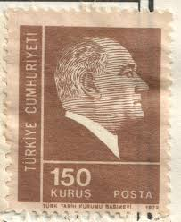 |
| Stampedia | stampedia TURKEY STAMP catalog |  |
| Shutterstock | Istanbul Turkey January 01 2021 Turkish Stock Photo 2646179107 | Shutterstock | 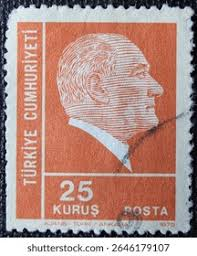 |
| kitantik | 1975 Atatürk - Efemera - kitantik | #30932510000013 | 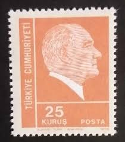 |
| Shutterstock | Turkey Circa 1972 Stamp Printed Turkey Stock Photo 92122717 | Shutterstock | 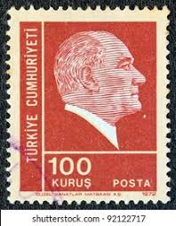 |
| Stampedia | stampedia TURKEY STAMP catalog | 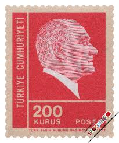 |
| eBay | Historical Figures Postage Turkish Stamps for sale | eBay | 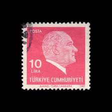 |
| gbenzi.it | timbres Turquie 1975 | 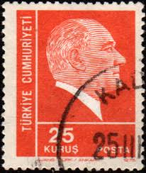 |
| chowdhurygroup.com | Stamps For Collectors MP1951 - Turkey, 500 Different Stamps - Mystic Stamp Company Philately Stamps Set | 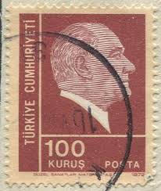 |
| Dreamstime.com | Tarih Kurumu Stock Photos - Free & Royalty-Free Stock Photos from Dreamstime | 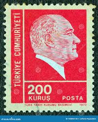 |
| Bob Shop | Turkey - Turkey 1961 History and Geography Faculty 2 Mint stamps was listed for 0.00 on 4 Apr at 03:01 by Klaas47 in Cape Town (ID:639219796) | 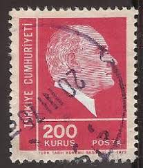 |
| HipStamp | Turkey, 1932, Mnh, Kemal Ataturk Purple | Europe - Turkey, General Issue Stamp / HipStamp | 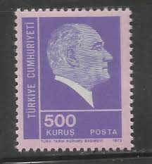 |
| Alamy | TURKEY - CIRCA 1978: stamp printed by Turkey, shows turkish pattern, circa 1978 Stock Photo - Alamy | 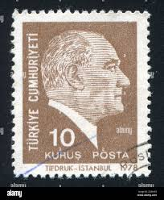 |
| Shutterstock | Mustafa Kemal Ataturk Portrait: Over 1,226 Royalty-Free Licensable Stock Photos | Shutterstock | 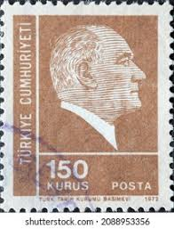 |
| gbenzi.it | stamps Turkey 1972 | 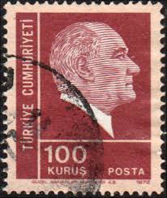 |
| stampsandstuff.net | Stamps from Turkey | 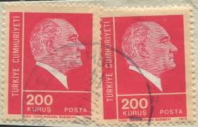 |
| Shutterstock | 1881 1938: Over 595 Royalty-Free Licensable Stock Photos | Shutterstock | 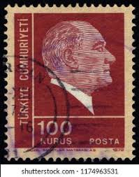 |
| Shutterstock | 1881 1938: Over 596 Royalty-Free Licensable Stock Photos | Shutterstock | 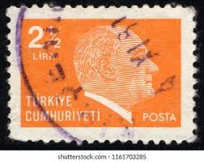 |
| Todocolección | turquia - valor facial 25 kurus - año 1975 - mu - Buy Antique stamps of Turkey on todocoleccion | 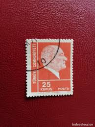 |
| vividagallery.com | Turkey Ataturk Overprint Lira Blue Green 1972 Typography Reuse Bath Towel by Vivida Gallery - Vivida Gallery | 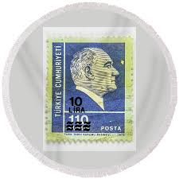 |
| Todocolección | europa. turquía. estatua de ataturk. 1967. yt-1 - Buy Antique stamps of Turkey on todocoleccion | 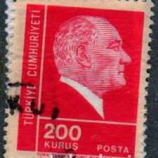 |
| eBay | Historical Figures Turkish Stamps for sale | eBay | 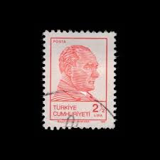 |
| ایسام | تمبر ترکیه بدون مهر | 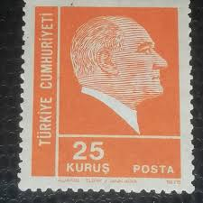 |
| kitantik | Mektup Zarfından Kesilmiş / Postadan Geçmiş İkili Pul Filateli - Damgalı - ATATÜRK, 25 KURUŞ - Türkiye Cumhuriyeti - Efemera - kitantik | #16802407004436 | 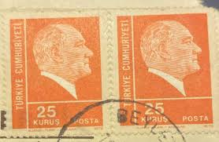 |
| Mercari | Postage stamps from Turkey | Mercari | 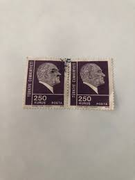 |
| Stampedia | stampedia TURKEY STAMP catalog | 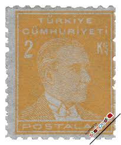 |
| Shutterstock | Istanbul Turkey December 25 2020 Turkish Stock Photo 2628537305 | Shutterstock |  |
| gbenzi.it | stamps exchange, catalogue Turkey 1977 Turkey 1977 | 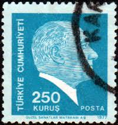 |
| Alamy | ISTANBUL, TURKEY - DECEMBER 27, 2020: Turkish stamp shows Nurullah Berk painting circa 1990 Stock Photo - Alamy | 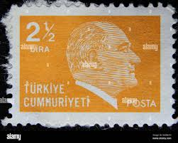 |
| Alamy | The face of President Ataturk printed on some Turkish flags for sale at a street vendor's stall Stock Photo - Alamy | 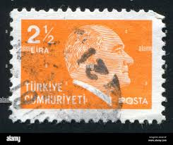 |
| Shutterstock | Ataturk Stamps: Over 867 Royalty-Free Licensable Stock Photos | Shutterstock | 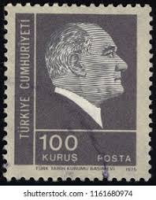 |
| Poppe Stamps | Poppe Stamps: Turkey, 1979, 2659, Kemal Ataturk - stamps for sale by theme and country | 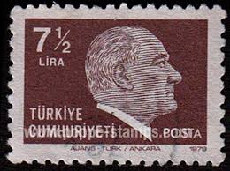 |
| Shutterstock | Singapore August 22 2018 Stamp Printed Stock Photo 1161673861 | Shutterstock | 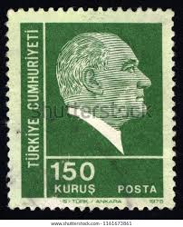 |
| Stampedia | stampedia TURKEY STAMP catalog | 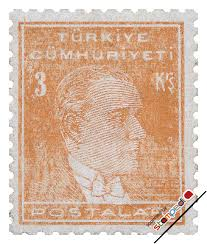 |
| Alamy | Postage stamp from Turkey in the Postal Stamps, 1979 series Stock Photo - Alamy |  |
| Shutterstock | Istanbul Turkey December 27 2020 Turkish Stock Photo 2579359843 | Shutterstock | 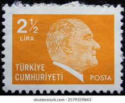 |
| Shutterstock | 70+ Thousand Stamp Face Royalty-Free Images, Stock Photos & Pictures | Shutterstock | 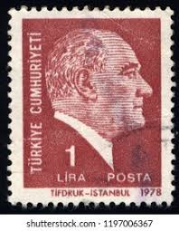 |
| Alamy | TURKEY - CIRCA 1942: stamp printed by Turkey, shows president Kemal Ataturk, circa 1942 Stock Photo - Alamy | 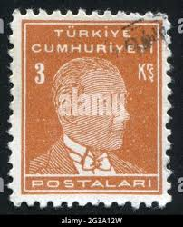 |
| Dreamstime.com | Isolated Turkish Stamp editorial image. Image of post - 358326020 | 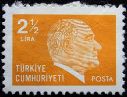 |
| Shutterstock | Turkey Circa 1985 Stamp Printed By Stock Photo 98065364 | Shutterstock | 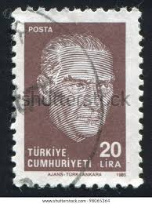 |
| Dreamstime.com | Postage Stamp Printed in Turkey Shows Kemal Ataturk, Definitive Postage Stamps, 1977, Ataturk Serie, 250 Turkish Kurus, Circa 1977 Editorial Photography - Image of people, coronets: 170914132 | 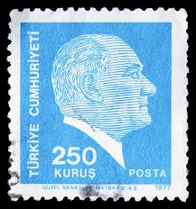 |
| eBay | Turkey 1977, Definitive Stamp: Atatürk set MNH, Mi 2418-19 | eBay |  |
| Shutterstock | Turkey Isolated On White Background Clipping Stock Photo 110834411 | Shutterstock | 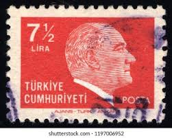 |
| Alamy | Stamp turkey hi-res stock photography and images - Page 3 - Alamy | 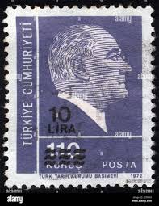 |
| Dreamstime.com | 258 Definitive Stamps Stock Photos - Free & Royalty-Free Stock Photos from Dreamstime | 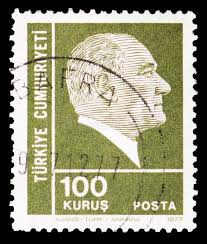 |
| Dreamstime.com | 251 Corn Postage Stamp Stock Photos - Free & Royalty-Free Stock Photos from Dreamstime | 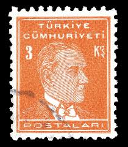 |
| Alamy | Mustafa Kemal Ataturk (1881-1938), first President of Turkey, postage stamp, Turkey, 1931 Stock Photo - Alamy | 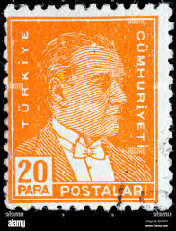 |
| buyhungarianstamps.com | 811-816 Turkey - Stamps of 1931-38 Overprinted in Black (MNH) – Eastern Europe Postage Stamps | Hungaria Stamp Exchange | 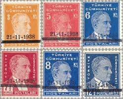 |
| vividagallery.com | Turkey Ataturk Portrait Lira Red Typography 1970s Engraving Tote Bag by Vivida Gallery - Vivida Gallery | 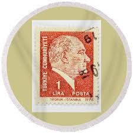 |
| Todocolección | turquía. 1972. 25 kurus. y vert 2028. usado - Buy Antique stamps of Turkey on todocoleccion | 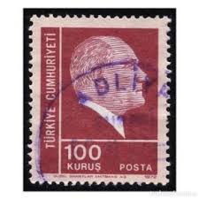 |
| Shutterstock | Mustafa Kemal Ataturk Portrait: Over 1,228 Royalty-Free Licensable Stock Photos | Shutterstock | 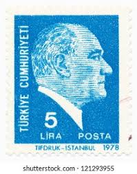 |
| iStock | Turkish Postage Stamp Stock Photo - Download Image Now - Antique, Black Background, Close-up - iStock | 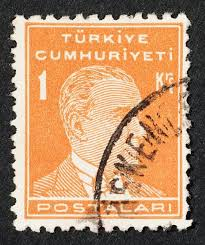 |
| HipStamp | Turkey, Sc #746A, 6k Used | Europe - Turkey, General Issue Stamp / HipStamp | |
| Shutterstock | turkish Postage Stamp": Over 4,502 Royalty-Free Licensable Stock Photos | Shutterstock | |
| Stampedia | stampedia TURKEY STAMP catalog | |
| Dreamstime.com | 1980 Turkish Stock Photos - Free & Royalty-Free Stock Photos from Dreamstime | |
| Dreamstime.com | 1942 Hair Stock Photos - Free & Royalty-Free Stock Photos from Dreamstime | |
| Ajuntament de Barcelona | Atatürk's Turkey - Col·leccio Marull |